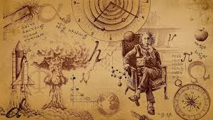
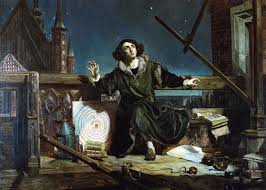
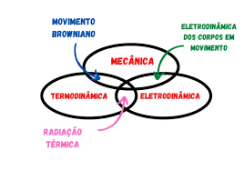
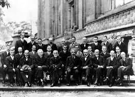
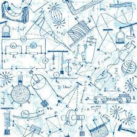

História da Física

Antiguidade
A física na Antiguidade surgiu como parte da filosofia natural. Aristóteles propôs ideias sobre movimento e elementos da natureza, enquanto Arquimedes desenvolveu princípios matemáticos e descobertas como o empuxo, essenciais para hidrostática.

Século XVII — Revolução Científica
Galileu introduziu o método experimental e derrubou concepções antigas, enquanto Newton formulou as Leis do Movimento e a Lei da Gravitação Universal, criando a base da mecânica clássica.

Século XIX — Unificação e Termodinâmica
James Clerk Maxwell unificou eletricidade, magnetismo e luz em um único conjunto de equações. A termodinâmica evoluiu com os estudos de Carnot, Clausius e Kelvin sobre energia, calor e entropia.

Século XX — Física Moderna
Einstein revolucionou o estudo do espaço-tempo com a Relatividade, enquanto Planck, Bohr, Schrödinger e Heisenberg desenvolveram a Mecânica Quântica. Surgiram também áreas como física nuclear, partículas e cosmologia.

Século XXI — Avanços Contemporâneos
O século XXI marca uma era de descobertas impressionantes. A observação de ondas gravitacionais em 2015 confirmou previsões da Relatividade Geral, enquanto telescópios modernos revelam novos exoplanetas e detalhes sobre a formação do universo. A física de partículas avançou com o LHC, que confirmou o bóson de Higgs em 2012. Tecnologias quânticas, como computação quântica e criptografia, continuam se desenvolvendo rapidamente, abrindo portas para uma nova revolução científica e tecnológica.